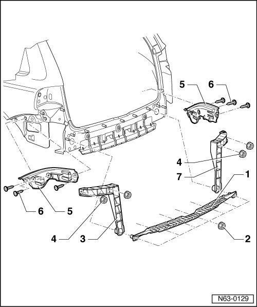

Rear Bumper Substructure
Rear Bumper
Rear Bumper Substructure
• Due to model variations, small deviations must be considered during removal and installation.

1 Center securing strip
2 Hex nut
• Quantity: 7
• 4.5 Nm
3 Left securing strip
4 Hex nut
• Quantity: 4
• 4.5 Nm
5 Guide trim
• To remove or install bumper, pull out or push in to guide trims (left and right) parallel to vehicle.
6 Bolt
• Quantity: 6
• 2 Nm
7 Right securing strip